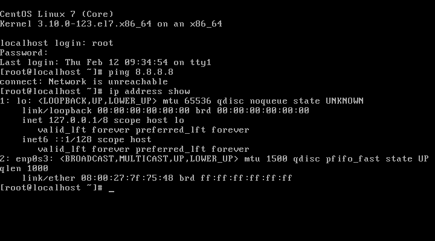
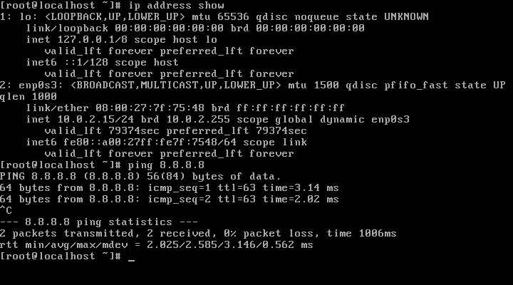
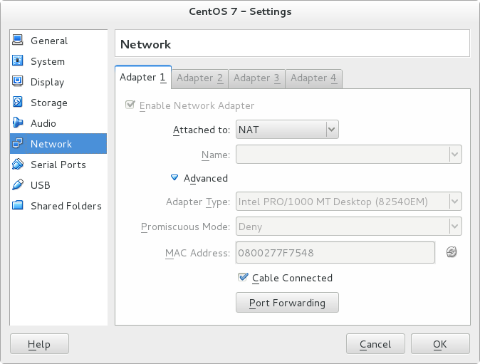
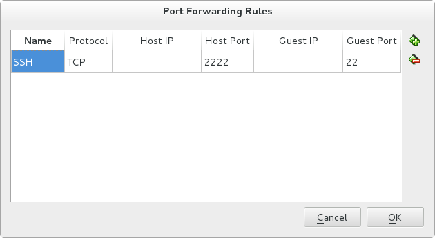

CentOS 7 Installatie¶
Nadat je een VM met CentOS 7 hebt aangemaakt moeten we hem nog verder configueren.
Je hebt tijdens de installatie in ieder geval een ‘root’ account aangemaakt met wachtwoord.
Je kan nu inloggen met dit account.
Bij ‘localhost login:’ vul je ‘root’ in, en bij ‘Password:’ uiteraard het paswoord.
Waarschijnlijk ben je nu niet verbonden met het netwerk (dit in het geval als je fysieke PC dat wel is).
Type ‘ping 8.8.8.8’ om te kunnen testen of je kan pingen naar een publieke server op het internet.
Type ‘ip address show’ om je huidige netwerk interfaces te zien inclusief een mogelijk IP adres.
Zoals onder te zien is een ping naar 8.8.8.8 niet succesvol.
Verder heb je twee interfaces:
- lo
- enp0s3
De ‘lo’ interface is een lokaal interface en kan je negeren. We focussen ons op het andere adres waarmee communicatie met andere machines mee mogelijk is. Het is goed mogelijk dat de inteface op jouw VM een andere benaming heeft.
De reden dat deze interace geen IP address is omdat deze standaard uit staat. Je kan het opstartscript voor deze interace bekijken via ‘cat /etc/sysconfig/network-scripts/ifcfg-enp0s3’.
Je ziet hier staan ‘ONBOOT=no’.
We gaan nu de file wijzigen in het programma ‘vi’ (of beter gezet ‘vim’).
Typ hiervoor ‘vi /etc/sysconfig/network-scripts/ifcfg-enp0s3’.
Warning
Zorg dat je ‘root’ rechten hebt zodat je de file kan veranderen. Hiervoor moet je ‘root’ zijn, of ‘sudo’ typen voor elk commando om deze rechten te krijgen.
Druk dan ‘i’ om naar ‘insert’ mode te gaan. Gebruik dan de pijltjes toetsen om ‘ONBOOT=no’ te vernderen in ‘ONBOOT=yes’. Daarna druk je de ‘ESC’-toets, vervolgd door ‘wq’.
Je kan nu het netwerk herstarten met systemctl restart network.service. Een ander alternatief (de botte bijl manier) is om de VM te herstarten met systemctl reboot.
Je ziet nu dat we wel een IP adres hebben op onze netwerk interface ‘enp0s3’ met IP address ‘10.0.2.15’.
We kunnen ook pingen naar 8.8.8.8.
Je kan ook pingen naar je eigen interface via ping 10.0.2.15.
Probeer je echter te pingen naar 10.0.2.15 vanaf je eigen computer (dus niet vanuit de VM), dan zie je dat het niet lukt.
dionysos:~$ ping 10.0.2.15
PING 10.0.2.15 (10.0.2.15) 56(84) bytes of data.
From 10.0.2.200 icmp_seq=1 Destination Host Unreachable
From 10.0.2.200 icmp_seq=2 Destination Host Unreachable
From 10.0.2.200 icmp_seq=3 Destination Host Unreachable
From 10.0.2.200 icmp_seq=4 Destination Host Unreachable
^C
--- 10.0.2.15 ping statistics ---
4 packets transmitted, 0 received, +4 errors, 100% packet loss, time 2999ms
pipe 4
Ga nu vanuit VirtualBox naar ‘Menu’, ‘Settings’, ‘Network’ en klik daar op ‘Port Forwarding’.
Klik daar op het icoontje met het plus-teken. En vul onderstaande gegevens in:
Dit betekent dat als je naar je eigen machine verbindt (bv. via IP adres 127.0.0.1) met poort 2222 dat je dan met de VM verbindt met poort 22. Dit is standaard SSH. Je kan nu dus verbinden via SSH (een commando regel verbinding), met de VM.
Note
In Linux en hoogstwaarschijnlijk in MacOS zit standaard een SSH programma. Het kan zijn dat Windows deze niet heeft. In dat geval kan je PuTTY downloaden waarmee je wel via SSH verbinding kan maken.
Als je geen naam invoert (zoals boven) de naam gebruikt dat je op dat moment gebruikt. In bovenstaand voorbeeld is dat ‘dion’. Wil je meteen met ‘root’ inloggen geef dat dan mee: